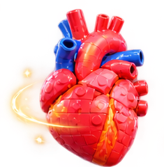

Missão em família • Sem QR Codes
1. Escolha Iniciar AR espacial.
2. Caminhe lentamente e aponte a câmera para uma mesa ou para o chão bem iluminado.
3. Quando aparecer um círculo, toque na tela para posicionar o coração, os pulmões e o cérebro em três lugares diferentes.
4. Toque em Começar caça e entregue o celular a outra pessoa. Ela deverá caminhar e tocar nos objetos para responder às perguntas.
Os objetos ficam posicionados durante a sessão AR; não permanecem salvos após fechar ou recarregar a página.
Verificando compatibilidade...
Use Chrome no Android, em HTTPS (GitHub Pages). AR espacial exige aparelho compatível com ARCore/WebXR. O modo simulado não fixa os objetos nos móveis.